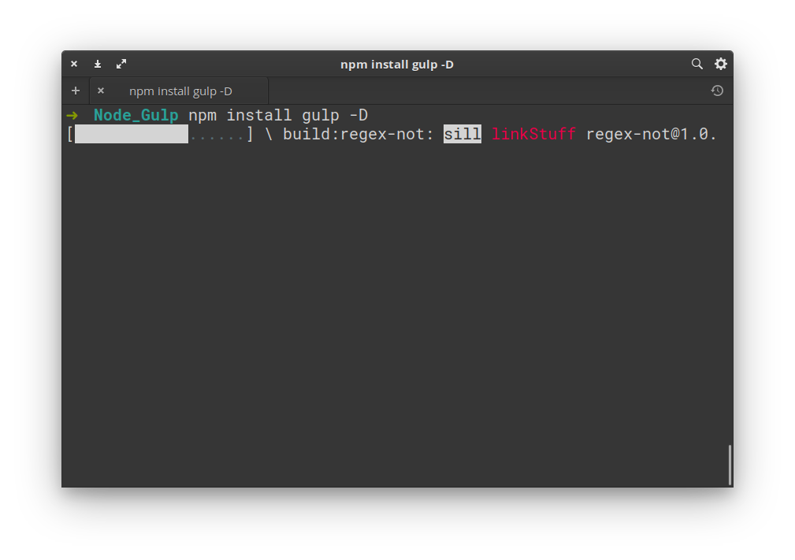
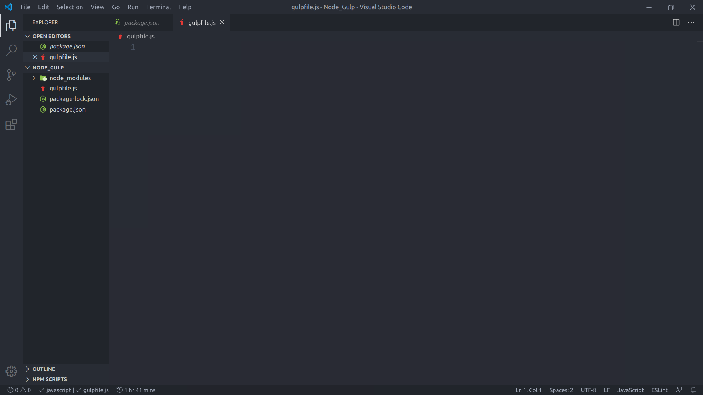
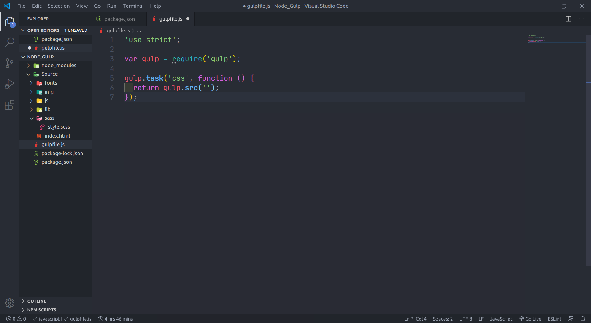
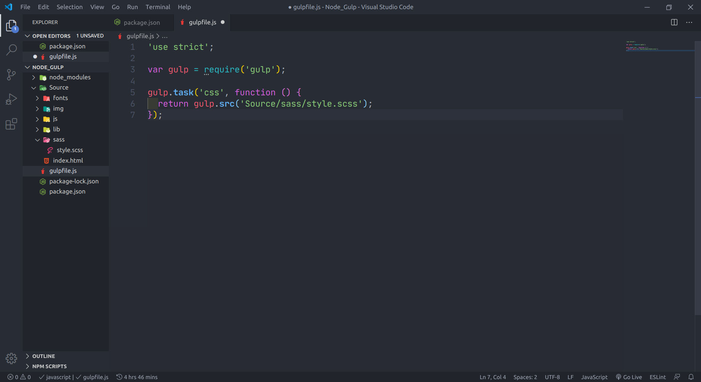
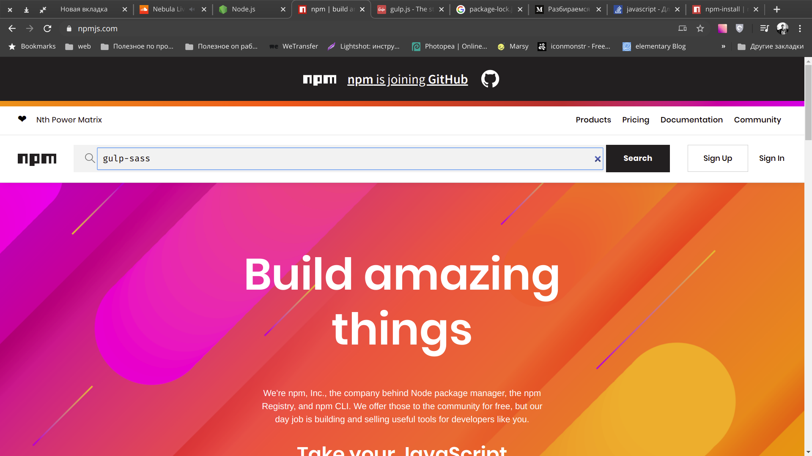
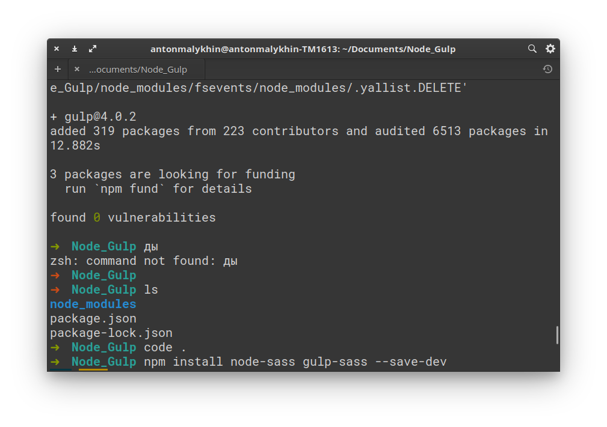
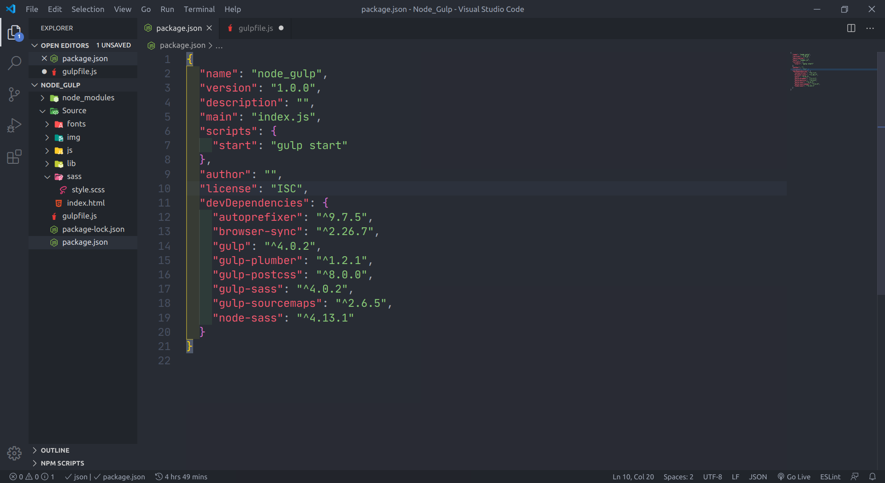

Первым делом нам понадобится Node.js - это, по сути, интерпретатор
JavaScript.
Обычно мы запускали скрипты в браузере и все было отлично! Однако, есть возможность
исполнять js вне браузера. И как раз Node позволяет нам это сделать.
Сначала надо установить его на свой компьютер.
Идем на сайт Node.js и качаем
Node для своей системы.
Качать
лучше LTS(англ. Long-Term Support; дословно «поддержка в течение длительного периода»).
Далее
устанавливаем.
После этого открываем консоль и вводим node -v
Эта команда покажет нам версию Node.js.
Если на этом этапе в консоли выводится сообщение об ошибке, значит
возникли проблемы с установкой, необходимо повторить установку.
Далее вводим в консоли npm -v Видим также версию npm.
Пару слов о npm.
Npm - это пакетный менеджер. Программа, позволяющая загружать,
устанавливать и
использовать пакеты, по сути, другие программы, написанный кем-то до нас и выложенные в открытый доступ.
Пакеты можно найти на сайте npm.
На этом этапе мы установили Node.js на наш компьютер.
Пришло время подготовки нашего проекта.
Инициализация npm-пакета
В нашей рабочей директории создаем новую папку, дадим ей какое-нибудь имя. Я назову
ее Node_Gulp.
Перейдем в нее и воспользуемся командой npm init для инициализации
нашего проекта.
Npm предлагает нам настроить наш проект (пакет), указав имя, версию,
описание
и т.д.
На этом этапе можно ничего не вводить, просто нажимаем Enter на каждом
шаге.
Затем npm демонстрирует нам файл package.json с нашими настройками, которые
мы
благополучно проигнорировали и спрашивает: “Все ли в порядке?” Подтверждаем, пишем
yes
Далее видим в нашей папке файл package.json.
Можно просмотреть его содержимое командой cat package.json
Ок! Значит наш проект-пакет создан, можно смело продолжать настройку!
Установка Gulp
Далее нам понадобится Gulp. Это так называемый task-runner! Тот самый парень, который будет выполнять за
нас всю грязную работу.
Для начала надо его установить.
На главной странице сайта Gulp видим ряд команд, которые позволяют нам его
установить. Первым делом выполняем npm install gulp-cli -g
Вероятно, возникнут ошибки при его установки, все дело в том, что мы должны
устанавливать его с правами администратора! Пишем: sudo npm install gulp-cli -g
Эта команда устанавливает не сам Gulp, а его CLI(Command Line
Interface) - интерфейс командной строки. Следом устанавливаем сам Gulpnpm install gulp -D

Установка завершена! Хорошо.
Если в консоли набрать ls то мы увидим, что теперь помимо package.json
у
нас появились еще папка node_modules и package-lock.json. Что это такое?
В node_modules находятся исходные файлы
установленных пакетов.
А вот функции package-lock.json не так просты,
чтобы описать его парой слов. Однако, я нашел такое определение:
Lock-файл — это моментальный снимок
всего дерева зависимостей, включающий все пакеты и их установленные версии.
Нас интересует строка devDependencies. Здесь перечисляются все пакеты,
которые мы устанавливаем с ключом -D (или можно писать --save-dev, это тоже
самое!).
Видим здесь пока только Gulp, что уже неплохо! Продолжим!
Структура проекта
Теперь поучимся использовать Gulp. Для этого надо создать gulpfile.js. Здесь мы и будем писать автоматизацию!

Для начала создаем переменную gulp подключаем Gulp:
var gulp = require('gulp');
И можно писать первый task!
У нашего gulp вызываем метод task(), куда передаем
название, в нашем случае это ‘css’ и колбек-функцию, которая возвращает
gulp.src(). В метод src мы должны передать путь к нашему файлу стилей.
А вот здесь имеет смысл поговорить о структуре нашего проекта, потому как она будет
несколько отличаться от привычной!
Проект будет разделен на 2 составляющих: Source и Build. В Source мы ведем
разработку, а в Build компилируется готовый проект.
В корне создаем папку с исходниками Source.
Внутри
нее папки img (изображения), js
(скрипты), lib (сторонние скрипты и стили), fonts (шрифты). И теперь самое интересное! Мы
не создаем папку со стилями, привычную нам css, вместо этого мы создаем
папку sass.
C этого момента мы будем использовать препроцессор SASS, а привычный
CSS будем компилировать при помощи Gulp!
Рядом с всеми этими папками создадим index.html
Внутри папки sass создаем style.scss.

Ок! Возвращаемся в gulpfile.js и пишем в
gulp.src() путь до наших стилей 'Source/sass/style.scss'

Устанавливаем Gulp-плагины
Для Gulp написано масса плагинов, который помогут нам сделать все рутинную
работу! Их можно найти на сайте.
Ниже я приведу список того, что нам понадобится:
gulp-sass
gulp-plumber
gulp-postcss
gulp-sourcemaps
autoprefixer
browser-sync

Нам надо установить это все!
Идем в консоль. Для начала установим gulp-sass
командой npm install node-sass gulp-sass --save-dev

Далее gulp-plumber: npm install --save-dev gulp-plumber
Потом gulp-sourcemaps: npm install --save-dev gulp-sourcemaps
Autoprefixer: npm install --save-dev autoprefixer
И наконец browser-sync: npm install --save-dev browser-sync
Возвращаемся в vscode! Можно заглянуть в package.json и убедиться, что все установлено так как надо.
Пишем tasks
Переходим к gulpfile.js. Продолжим писать наш
конфиг! Подключаем пакеты, которые мы только что установили.
Вернемся к первому task!
Делаем более читаемый вид.
Далее пишем следующий task, который будет создавать локальный сервер и следить за
изменениями наших .html и .scss файлов. И еще дополним первый task.
Теперь создадим task, который стартует наш сервер. А колбек-функцией здесь выступит
метод gulp.series(‘css’, ‘server’);
Теперь перейдем в package.json и немного
подредактируем "scripts" . Вместо
"test": "echo \"Error: no test specified\" && exit 1" напишем
"start": "gulp start". Таким образом, мы создали скрипт, который будет запускаться командой
npm start, который в свою очередь, будет запускать task "start" из нашего gulpfile.js.

Запускаем сервер
Давайте перейдем в консоль и попробуем запустить наш скрипт. Пишем:
npm start
Если мы все верно сделали должен запуститься локальный сервер.
И автоматически откроется окно браузера (Если не открывается автоматически,
копируем
адрес в строке local, у меня это http://localhost:3000, открываем браузер и
вставляем в строку поиска).
Страница пустая!? Дело в том, что браузеру пока нечего отображать. Мы создали
структуру проекта а в файлах разметки и стилях ничего не написали.
Переходим в папку sass. В style.scss пишем html {background-color: red;} Обратите
внимание у нас уже появилась папка css. Мы ее не создавали, а вот
Gulp скомпилировал!
Кроме того, посмотрим в консоль и увидим, что наш сервер автоматически
перезагружается.